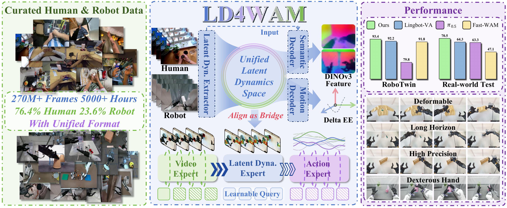
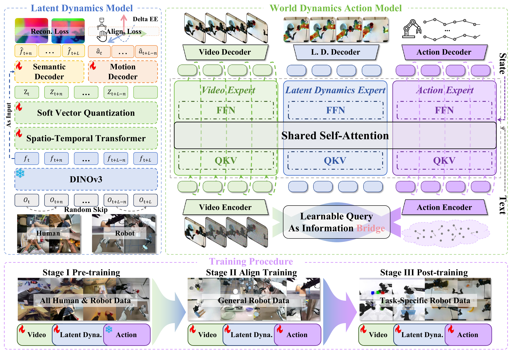

01
Long Horizon
Multi-step task execution
Learning Latent Dynamics from Human Videos
for World Action Models
* Equal contribution. † Corresponding author.
LD4WAM learns what changes between frames while suppressing appearance and embodiment details, turning diverse video into a compact signal that a robot can use.
Diverse and inexpensive, but pixel prediction is not directly actionable.
Executable and precise, but expensive to collect and tied to one embodiment.
Not pixels. Not raw actions.
A representation of meaningful change.
Semantic reconstruction captures high-level evolution. Motion alignment grounds it in real end-effector movement. Together they form an embodiment-agnostic bridge.

Learnable queries carry motion-aligned dynamics from generated futures into the action expert, while preserving the full video prior.
Predict future observations and retain visual priors.
Learnable queries summarize what will happen next.
Use generated future video and latent dynamics to condition robot action generation.

A curated corpus spanning human egocentric videos and multi-embodiment robot demonstrations, standardized into a unified LeRobot format.
LD4WAM transfers across objects, backgrounds, grippers, and dexterous hands.
Distinct manipulation regimes, evaluated across gripper and dexterous-hand embodiments.
Multi-step task execution
Fine-grained hand control
Non-rigid object manipulation
Accurate insertion and placement
Task execution remains robust when visual conditions depart from the training setting.
Unseen object instances
Lighting perturbation
Surface texture shift
Distractor objects in scene